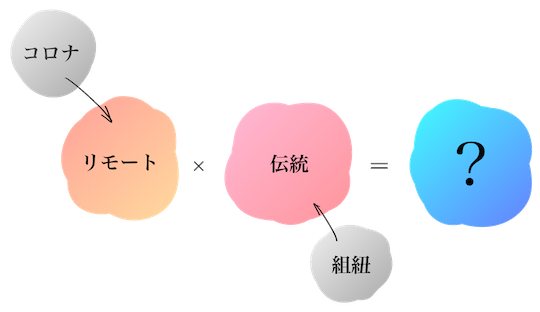

【12月ワーク】
新しい伝統作りの草案
メモ
コロナを通しての美しいストーリー探し
コロナ後、繋がりを重視する（ゼクシィ）
離れていてもつながっているそういう演出？
組紐
親戚や友人に編んでもらった紐を使ってそれを新郎新婦がつけるそういう演出(?)
それぞれ組紐を作ってもらい
それを結ぶ
新郎新婦が身につける
式が終わっても、つながりを感じられる
実用性
式参加者との一体感
リモート×伝統×絆
和婚だけでなく洋式でもいけるもの
繋がりや絆、伝統×新しさ
新しいって何？
日本人の宗教に対する関心
↓
仏教伝来×神道×海外の洋風要素
↓
新時代の組紐
どの挙式スタイルでもできる(ポイント)
簡単に誰でも結婚式に組紐の儀式が行えるプロダクトの開発…？
・コンセプトストーリー
・デザイン
・どういう流れ・仕組みにするか
そのためにやらなきゃいけないことは…？

「主役を輝かせるお手伝い」
「今までも、今日（結婚式）も、これからもずっと繋がっていられる」
「離れていてもそばにいる、そんな言葉で表現できる？」
購買ストーリー（これ考えなきゃいけないやつ）
結婚式に呼べない人たちにもお願いできる